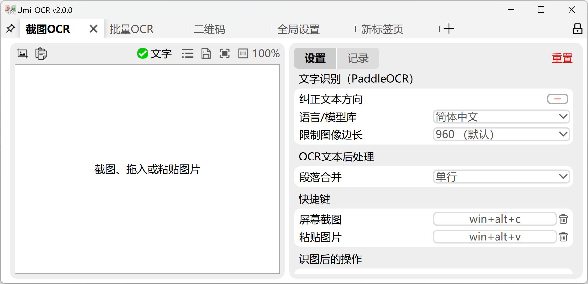

在思源笔记中直接复制图片上的文字
video/已发布
https://www.bilibili.com/video/BV1Qhv5erE6J/
你是否曾经为手动输入图片上的文字而烦恼？思源笔记的新插件来了！现在，你可以轻松从图片中提取文字，快速复制到笔记中。让我们一起来看看这个神奇的工具吧！
OCR 插件的神奇之处
一键识别：打开
图片菜单，点击OceanPress OCR按钮，几秒钟之后图片上的文字就识别完毕了，现在就可以直接从图片中复制文本粘贴到其他地方了

1.
本地化
：支持 umi-ocr 本地 ocr 识别，准确率超高，不用担心隐私图片上传。
2.
无缝集成
：与思源笔记完美融合，操作简单，无需切换应用。